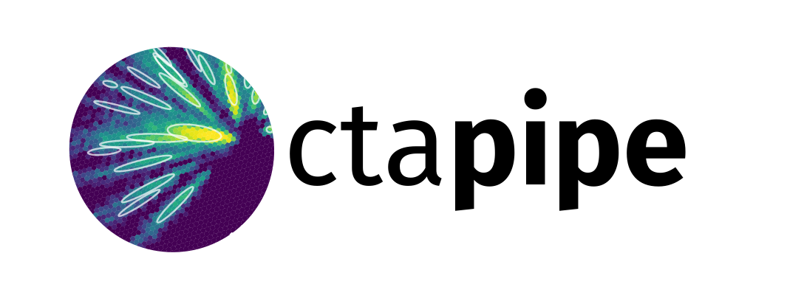

Prototype CTA Pipeline Framework (ctapipe)¶
version: 0.6.1.post24+git95069a3
{kind=link}
What is ctapipe?¶
ctapipe is a framework for prototyping the low-level data processing algorithms for the Cherenkov Telescope Array.
Caution
This is not yet stable code, so expect large and rapid changes to structure and functionality as we explore various design choices before the 1.0 release.
- Code, feature requests, bug reports, pull requests: https://github.com/cta-observatory/ctapipe
- Docs: https://cta-observatory.github.io/ctapipe/
- License: BSD-3
- Python 3.6 or later (Python 2 is not supported)
General documentation¶
- Getting Started For Developers
- Development Guidelines
- Command line tools (
tools) - Analysis (
analysis) - Calibration (
calib) - Coordinates (
coordinates) - Core Structures and Base Classes (
core) - Imaging (
image) - Instrument (
instrument) - Input/Output (
io) - Reconstruction (
reco) - Utilities (
utils) - Visualization (
visualization) - Frequently Asked Questions
- References
- Change Log
Module API Status (relative to next release)¶
- stable = should not change drastically in next release
- caution = mostly stable, but expect some changes
- unstable = expect large changes and avoid heavy reliance
- experimental = stable feature, but under evaluation
- deprecated = do not use
| Module | Status |
|---|---|
analysis |
stable |
calib |
stable |
coordinates |
caution |
core |
stable |
instrument |
stable |
io |
stable |
reco |
stable |
utils |
stable |
visualization |
stable |
Development Help¶
- Development workflow examples from AstroPy: http://astropy.readthedocs.org/en/latest/development/workflow/development_workflow.html
- GIT tutorial: https://www.atlassian.com/git/tutorials/syncing/git-pull
- Code distribution and Packaging https://packaging.python.org/en/latest/